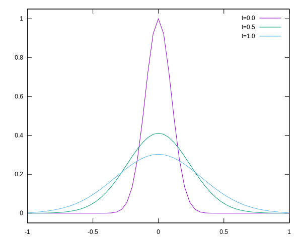

Some equations
\[\renewcommand{\vec}[1]{{\bf #1}}\]
Let’s solve the diffusion equation,
\[\partial_t u = a \partial_{xx} u.\](1)
We may discretise the double space derivative using central differences,
\[\Delta x^2 \partial_{xx} u|_i = u_{i-1} - 2 u_{i} + u_{i+1}.\](2)
For the time derivative we use a backward (implicit) Euler scheme,
\[u_{j+1} = u_{j} + \Delta t \partial_t u |_{j+1}.\](3)
Combining those gives,
\[u_{(i, j+1)} = u_{(i, j)} + {{a \Delta t} \over {\Delta x^2}} \Big(u_{(i-1, j+1)} - 2 u_{(i, j+1)} + u_{(i+1,j+1)}\Big).\](4)
Now, writing our spatially discretized \(u_{i}\) as a vector \(\vec{u}\), the above relation becomes a matrix equation,
\[\vec{u}_{j+1} = \vec{u}_{j} + {{a \Delta t} \over {\Delta x^2}} A \vec{u}_{j+1},\](5)
where \(A\) is the tri-diagonal matrix,
\[A = \begin{pmatrix} -2 & 1 & 0 & 0 & \dots\\ 1 & -2 & 1 & 0 & \dots\\ 0 & 1 & -2 & 1 & \dots\\ 0 & 0 & 1 & -2 & \dots\\ \vdots & \vdots & \vdots & \vdots & \ddots\\ \end{pmatrix}.\](6)
This entire system can be written as a linear equation \(B \vec{u}_{i+1} = \vec{u}_{i}\), where \(B = I - cA\), and \(c = a\Delta t / \Delta x^2\). Note that we have assumed boundary conditions where \(u = 0\) outside the domain.
Implementation
We solve equation 1 for a given diffusion coefficient DIFFUSION and a Gaussian peak initial condition with a width of SIGMA0. The domain is \([-1.0, 1.0]\) over GRID_SIZE steps, and we integrate from \(t=0\) to \(t=1\) over TIME_STEPS number of steps.
«diffusion-constants»
const GRID_SIZE = 150
const TIME_STEPS = 100
const SIGMA0 = 0.1
const DIFFUSION = 0.05We need to solve for the matrix equation \(B y_{i+1} = y_{i}\), where \(B = I - cA\). This is a symmetric tri-diagonal system, one we create with SymTridiagonal. The center diagonal has values of \(1 + 2c\) and the first off-diagonal \(-c\).
«diffusion-linear-system»
positions = LinRange(-1.0, 1.0, GRID_SIZE+1)
times = LinRange(0.0, 1.0, TIME_STEPS+1)
delta_x = 2.0 / GRID_SIZE
delta_t = 1.0 / TIME_STEPS
y0 = exp.(positions.^2 ./ (-2*SIGMA0^2))
# y0 = positions .|> x -> abs(x) > SIGMA0 ? 0 : 1 # alternative: step-function
c = DIFFUSION * delta_t / delta_x^2
B = SymTridiagonal(fill(1 + 2*c, GRID_SIZE+1), fill(-c, GRID_SIZE))
yn = FunctionIterator(y -> B \ y, y0)Main
In Julia you should always put code in a function. This way the compiler knows what to do up front.
file:src/diffusion.jl
using LinearAlgebra: SymTridiagonal
using Printf: @printf
<<diffusion-constants>>
<<function-iterator>>
<<snapshots>>
function main()
<<diffusion-linear-system>>
result = Iterators.map(Snapshot, times, yn)
for s in every_n(result, 50)
print_snapshot(s, positions)
end
end
main()Snapshots
We store our result in a series of snapshots, being a combination of time and solution. The print_snapshot function gives output that is suitable for visualisation with Gnuplot.
«snapshots»
struct Snapshot
t :: Float64
y :: Vector{Float64}
end
function print_snapshot(s::Snapshot, pos)
@printf "# t = %f\n" s.t
for (x, y) in zip(pos, s.y)
@printf "%f %f\n" x y
end
@printf "\n\n"
endFunction iterator
Julia defines an interface for iterators. I couldn’t find in the standard library, an iterator that iterates on a function ad infinitum, so let’s define one.
«function-iterator»
struct FunctionIterator
f :: Function
arg :: Any
end
Base.iterate(a::FunctionIterator) = (a.arg, a.f(a.arg))
Base.iterate(a::FunctionIterator, x) = (x, a.f(x))
Base.IteratorSize(::FunctionIterator) = Base.IsInfinite()
function every_n(iter, n)
Iterators.map(first, Iterators.partition(iter, n))
endSince we join this infinite iterator with the finite times, we get a finite output in the end. The every_n function takes an iterator and gives every \(n\)-th item back.
Results
